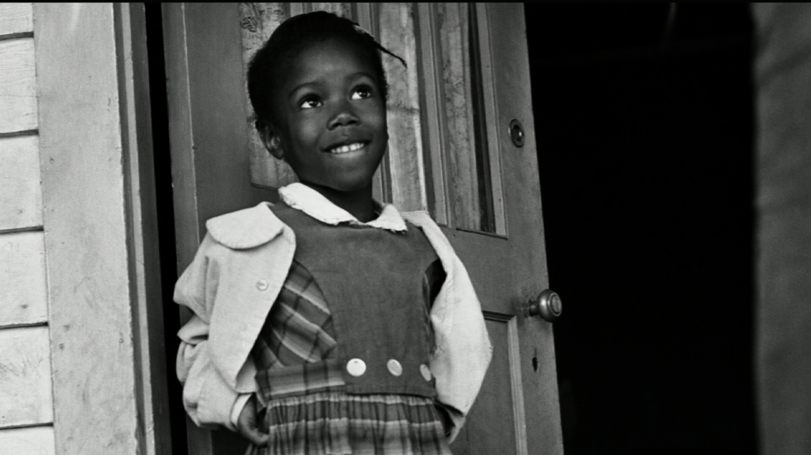

Ruby Bridges

À l’âge tendre de six ans, Ruby Bridges a fait avancer la cause des
droits civiques en novembre 1960 lorsqu’elle est devenue la première
étudiante afro-américaine à intégrer une école primaire dans le Sud.
Né le 8 septembre 1954, Bridges était l’aîné des cinq enfants de
Lucille et Abon Bridges, agriculteurs à Tylertown, Mississippi. Quand
Ruby avait deux ans, ses parents ont déménagé leur famille à la
Nouvelle-Orléans, en Louisiane, à la recherche de meilleures
opportunités de travail. L’année de naissance de Ruby a coïncidé avec
la décision historique de la Cour suprême des États-Unis dans
l’affaire Brown v. the Board of Education of Topeka Kansas, qui a mis
fin à la ségrégation raciale dans les écoles publiques.
Néanmoins, les États du Sud ont continué à résister à l’intégration et, en 1959, Ruby
a fréquenté un jardin d’enfants ségrégué de la Nouvelle-Orléans. Un an
plus tard, cependant, un tribunal fédéral a ordonné à la Louisiane de
mettre fin à la ségrégation. Le district scolaire a créé des examens
d’entrée pour les étudiants afro-américains afin de voir s’ils
pouvaient concourir académiquement à l’école entièrement blanche. Ruby
et cinq autres étudiants ont réussi l’examen.
Ses parents étaient
déchirés quant à savoir si elle devait la laisser fréquenter l’école
primaire William Frantz, entièrement blanche, à quelques pâtés de
maisons de chez eux. Son père a résisté, craignant pour la sécurité de
sa fille; sa mère, cependant, voulait que Ruby ait les possibilités
d’éducation qui avaient été refusées à ses parents. Pendant ce temps,
le district scolaire a traîné les pieds, retardant son admission
jusqu’au 14 novembre. Deux des autres élèves ont décidé de ne pas
quitter leur école du tout; les trois autres ont été envoyés à l’école
primaire McDonough, entièrement blanche.

Ruby et sa mère ont été
escortées par quatre maréchaux fédéraux à l’école tous les jours cette
année-là. Elle est passée devant la foule en lui criant des insultes
vicieuses. Sans se décourager, elle a dit plus tard qu’elle n’a eu
peur que lorsqu’elle a vu une femme tenant une poupée noire dans un
cercueil. Elle a passé sa première journée dans le bureau du directeur
en raison du chaos créé lorsque des parents blancs en colère ont
retiré leurs enfants de l’école. D’ardents ségrégationnistes ont
retiré leurs enfants de façon permanente. Barbara Henry, une blanche
originaire de Boston, était la seule enseignante prête à accepter
Ruby, et toute l’année, elle était une classe d’un. Ruby déjeunait
seule et jouait parfois avec son professeur à la récréation, mais elle
ne manquait jamais un jour d’école cette année-là.
Alors que certaines
familles soutenaient sa bravoure – et que certains habitants du Nord
envoyaient de l’argent pour aider sa famille – d’autres protestaient
dans toute la ville. La famille Bridges a souffert pour leur courage:
Abon a perdu son emploi et les épiceries ont refusé de vendre à
Lucille. Ses grands-parents métayers ont été expulsés de la ferme où
ils vivaient depuis un quart de siècle. Au fil du temps, d’autres
étudiants afro-américains se sont inscrits; de nombreuses années plus
tard, les quatre nièces de Ruby y assisteraient également. En 1964,
l’artiste Norman Rockwell a célébré son courage avec une peinture de
ce premier jour intitulée « Le problème avec lequel nous vivons tous
».
Ruby est diplômée d’un lycée déségrégationniste, est devenue agent
de voyages, s’est mariée et a eu quatre fils. Elle a retrouvé son
premier professeur, Henry, au milieu des années 1990, et pendant un
certain temps, le couple a donné des conférences ensemble. Ruby a
ensuite écrit sur ses premières expériences dans deux livres et a reçu
le Carter G. Woodson Book Award.
Militante de longue date pour
l’égalité raciale, Ruby a créé en 1999 la Ruby Bridges Foundation pour
promouvoir la tolérance et créer le changement par l’éducation. En
2000, elle a été nommée maréchal adjoint honoraire lors d’une
cérémonie à Washington, DC.
.jpg)